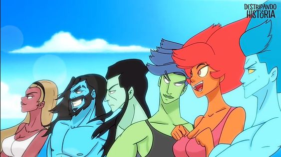

DESTRIPANDO LA HISTORIA: DIOSES GRIEGOS
Bienvenido/a a nuestro sitio web. ¿Te interesa la historia basada en la mitología griega?¿Eres un lector de obras literarias basadas en ello?. Quedate´si es así
Sumérgete en el fascinante mundo de los dioses griegos con Destripando la Historia. Aquí, descubrirás las épicas aventuras y travesuras de los poderosos dioses del Olimpo. Desde Zeus, el rey de los dioses, hasta Hades, el señor del inframundo, cada deidad tiene una historia única y emocionante que contar.
La mitología griega está formada por el conjunto de relatos, mitos y leyendas que fueron creados en la Antigua Grecia (c. 1200 a. C.-146 a. C.), considerada como la cuna cultural de la civilización occidental.
Está recogida en un conjunto diverso de textos que perduraron hasta hoy, en los que queda de manifiesto cómo los antiguos griegos explicaban el mundo, practicaban su religión y representaban su cultura y sus valores. También sobrevivieron muchos temas de la mitología griega en esculturas, ilustraciones, decoraciones cerámicas y otras formas de arte
Los relatos que componen la mitología griega fueron inicialmente divulgados de manera oral, ya que en muchos casos eran previos a la invención de la escritura. Estos relatos eran recitados por aedos (artistas que cantaban epopeyas acompañados de la lira). Los mitos eran transmitidos de generación en generación, y posteriormente fueron plasmados y versionados por escrito.